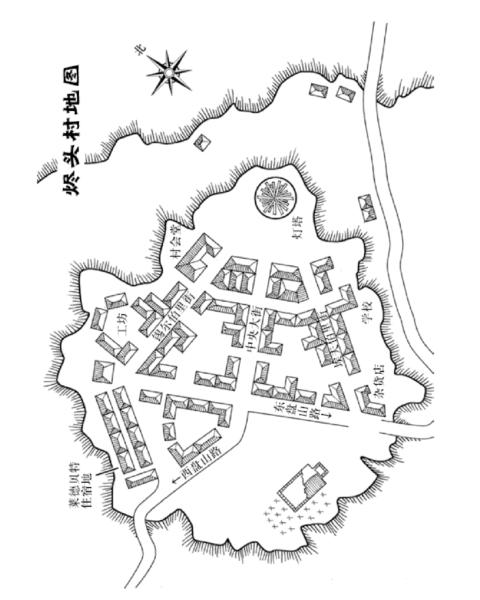

Along Against the Flames
1. day1
1.1. 1
太阳高悬天空，无情地释放着热量。当你来 到奥斯本药店门口的汽车站时，感觉自己都要被 烤熟了。你放下沉重的行李箱，摘下帽子，终于 得到片刻休息。你往脸上扇了扇风。在你的家乡， 夏天总是漫长；但这个夏天格外令你空虚。 你望向街对面，街对面是肮脏的肉店，挂着 褪色遮阳篷的杂货店，还有破旧的烟草店。人们 路过你时，用不信任的表情盯着你看，打量着你 的衣着和行李。但住在这里是你父母的主意，和 你无关。当你还是个小孩时也曾经南下；那时你 还很开心，普罗维登斯有白墙小屋，还有绿树掩 映的教堂。也许去阿卡姆开始新工作可以带给你 你需要的改变。 但你在这世界上认识的所有人都住在这里。 你在阿卡姆一个人也不知道，一个灵魂也不认识。 你最后问了自己一遍，自己的选择到底是不是正 确的。 答案已经很清楚了。你所谓的朋友没有一个 人来为你送行，你现在孤身一人。无论阿卡姆有 什么挑战等待着你，那都将是新的生活、光彩夺 目的生活。 一辆灰色的小长途车开了过来，嘎啷嘎啷地 响着停下。你戴回帽子，提起你的行李箱。
1.2. 263
两个面有愠色的年轻男人走下了长途车。一 个人从头到脚打量了你一遍，才转头离去。司机 也下了车，瞟了你一眼，穿过马路进了烟草店。 等他回来的时候，他正用泛黄的手指搓着烟卷。 他卷完了最后一下，一边伸手寻找火柴盒，一边 仔细地观察你。他身材瘦削，约莫五十多岁，身 上穿的衬衫有公共汽车公司的徽标，沾着不少污 渍。但他的眼神仍然锐利地从深陷的眼眶里透出 来。 “去哪儿？”
你把你去奥西皮 (Ossipee) 的票拿给他看。从 那里你可以前往罗切斯特、朴次茅斯，再沿海岸 线到达纽伯里波特，最后抵达阿卡姆。你也许买 得起至少一部分旅程的火车票，否则这将是很多 段长途汽车旅程的第一站。 “嗯——哼。”司机擦着火柴，点燃了他的香 烟。他吸了一口，烟头开始闪光。然后他又吐了 一口烟，用手指了指车尾。 “行李架在上边。
1.3. 8
司机叼着烟，看着你把箱子拖到长途汽车的 后面去。行李架装在车顶上，十分不便。你握紧 了沉重的箱子。
如果你的“体型”是 40 …
1.4. 38
司机继续享受他的烟卷，饶有兴致地看着你 和箱子拼命。你咬咬牙，终于把第二个行李举起来， 放到了位。兴许阿卡姆的人会比他有礼貌点儿。
1.5. 233
司机把他的烟卷弹进排水沟，走进了车厢。 发动机咳嗽着开始运转。你也上了车，非常庆幸 自己至少在旅程开始时是唯一的乘客。你怀着复 杂的感情，隔着窗户看着那些早已看厌的街道缓 缓退远，慢慢滑到你身后。最初几分钟你还能看 见山坡顶上教堂的尖顶，但道路开始下坡，很快 连尖顶也看不到了。 阿卡姆将是你的新家。你会到那里，开始新 的生活。
1.6. 134
长途车突突地响着，在乡间缓慢挪动。车里 的气氛令人窒息，每当车转弯的时候，你的肚子 里就一阵翻腾。不过司机身边的窗户是开着的， 你换了几个座，找到了一个可以让微风吹到脸上 的位置。没多久你就放松下来，开始享受旅程， 观察着长途车经过的富有古趣的小小村落。在一 个村庄，一位体格粗壮的女人上了车，对你礼貌 地点点头。到了下一个村庄，她就下车了。 道路升高了一些，穿越一片又一片的玉米地 和果园。树叶正在变色，把树木装点成鲜红、金黄， 灿烂缤纷，富有生机。当你快要打起瞌睡的时候， 司机开始快速通过一个急弯。 现 在 你 必 须 要 进 行 一 次 敏 捷 检 定。 投 掷 1D100。这表示投掷两颗十面骰子，一颗骰子结 果为十位，另一颗为个位。你必须在投掷之前选 择哪个是十位，哪个是个位！ 如果你投出来的结果等于或小于你的“敏捷”， 你的检定就成功了。如果结果大于你的“敏捷”， 你的检定就失败了。
1.7. 261#
你被一阵绝望的叫喊惊醒了。司机猛打方向 盘，长途车跌出了路沿，你感觉自己从座位上往 下滑。你紧紧抓住前面的座位，不及时的话，肯 定会摔得生疼。长途车发出一声闷响，停了下来。 现在你才看到发生了什么事。一辆福特森拖 拉机停在了路中央，你的司机刚才必须紧急转弯 躲避这只铁皮拦路虎。他从座位上跳下马路，对 开拖拉机的农民吐出一连串咒骂。 你花了一会儿工夫才喘过气来。也许你可以 帮帮忙？但是司机已经回来了。他往后倒了倒车， 绕开了拖拉机，对农民怒目而视。
1.8. 71#
你的行程重新开始了。司机转弯时变得更加 小心。他转过头看了你好几次。 “刚才对不住，”他说，“那货比猪还蠢。我 叫西拉斯。你的名字是？” 刚才的事件里，西拉斯和农民的责任至少要 对半分。但是，当他开车带你穿过这前不着村、 后不着店的地方时，和他对抗可能并不明智。 为你的角色起一个名字，把它记在自己的调 查员角色卡上。你还可以加上你的年龄；对本冒 险来说，你的角色年龄应当在 23 到 36 岁之间。 长途车开上了一条窄一些的路，这条路迂回 上升，穿过树林。西拉斯的话变得多了起来。 “去阿卡姆吗，哈？都没听说过这地方。就 去过一次波士顿。不喜欢。人太多，太闹腾。你 家在那里吗？有特别的人等你吗？” 下午的时间在缓慢地流逝。你觉得向西拉斯 透露自己的新生活也没有什么坏处。 “工作哈？你干哪行？”
1.9. 249#
你没有按通常的方式讲述自己的专业，而是 兜了个圈子，只说自己帮助警察解决过各种各样 的问题。一想到你得到了布莱克伍德侦探事务所 的职位，你的心跳就会稍稍加速。你已经受够了 婚姻不忠和银行职员受贿之类的调查；听上去布 莱克伍德事务所恰好可以提供机会，让你积累起 和真正的坏人斗争的经验。 西拉斯眯起了眼睛，但什么话也没说。
1.10. 128#
你发现，西拉斯自从和拖拉机发生冲突之后， 再没有停站。长途车沿着山坡盘曲上行。但是， 当道路攀上了山顶，山下绝佳的美景一览无余地 展现在你面前时，你的思绪被打断了。 色彩斑斓的树叶，铺成了深秋的调色板；一 条溪流从谷底蜿蜒流过，又将这调色板打破成两 半。远方白山山脉在朦胧的云雾之中若隐若现。 极目远眺，视野之中没有一座村庄，甚至连一座 小木屋都见不到。你能看到鸟儿在树冠之上翱翔， 还能勉强捕捉到两只白尾鹿在水边流连的身影。 也许你搬家到大城市去是个错误。在这繁盛 的大自然当中，你能不能独自生存下去呢？
1.11. 144#
长途车咯吱咯吱地继续行驶，西拉斯又一言 不发了。你身后的天色逐渐变暗，随着日落西山， 云彩也被染上了一层粉红色。终于，你看到了受 人欢迎的景象：坡顶上坐落着一个小村庄。这里 和你在照片上见过的奥西皮并不一样。但你也许 可以说服西拉斯停一下车，让你伸展伸展腿脚。 过了几分钟，发动机突然急促地停止，打断 了你的沉思。西拉斯皱起眉头，拉了一下变速杆。 长途车踉踉跄跄地继续上坡。西拉斯用你察觉不 到的声音骂了一句，咬紧牙关，和轮子开始死磕。 你们似乎在一点一点地往上挪动，终于抵达了第 一座房子，一座粗糙红石头砌成的低矮住宅。西 拉斯费力地把车停在路边的一块小空地上。他爬 下自己的座位，走到发动机舱那里。 你必须选择使用「汽车驾驶」或「心理学」 进行一次检定。如果你选用「汽车驾驶」，你投出 的结果需要小于等于技能值。如果你选用「心理学」 你需要一次困难成功。这个检定的结果需要小于 等于技能值的一半（右上角小方格里的数值）。你 只能选择一项技能来检定一次。
1.12. 194#
西拉斯打开了引擎舱盖，把头伸了进去。这 块烧热的铁疙瘩砰砰作响，咝咝有声。他把各个 部位都戳了几下，然后伸出头来，擦了擦额头， 额头上沾上了漆黑的油污。 “我不知道是哪的问题。也许是油压不行。 也许是刚才摔了一下的时候什么东西摔坏了。得 两个气缸都凉下来才能修。天也晚了……我觉得 我们应该在这里过夜。”他一边用破布擦手一边说。 你四周的影子都已经很长，空气中也有了寒 意。你因为旅途而感到浑身酸痛，在这摇摇晃晃 的长途车里过一夜可一点也不好受。西拉斯看出 了你的沮丧。 “这里叫烬头村。别的村子要走好几里。我 每星期才来两次。但这里的人都是好人。梅·莱 德贝特有间空房。她会让你留宿的。顺着这条巷子， 右转，左边第一间房。” 他挠了挠脸颊，又把头探进发动机舱，往地 上吐了口痰。 “明天早上八点回来找我，再看看车的情况。” 问西拉斯他在哪里过夜，转到 251。
1.13. 251#
你问西拉斯他要怎么办。他烦厌地看了一眼 发动机，才回答道： “我村里有认识的人。希望他们能还我个人 情。不管怎样我都有地方睡，还管早饭。”他注视 着自己肮脏的手，“热水澡恐怕指望不上。” 你似乎没有什么选择。你从长途车顶取下了 自己的行李。你最不希望发生的就是在陌生人的 棚屋过了一夜之后，发现自己的全部家当不翼而 飞了。
1.14. 267#
你拖着行李，走过这些阴郁的建筑物。你在 车里坐了一整天，感觉疲惫不堪。按照西拉斯说 的路走过去，有一座朴素的石板色房顶小楼。房 前挂着名牌，上面写着“莱德贝特”，下面有一块 洁净的铜牌，上面写着“住宿”。你四周的小巷昏 暗无光，但窗户里有一盏灯火在闪烁。 一阵冷风吹过你的脸颊。你还不想自己的新 生活从露宿街头开始。你轻轻敲起了面前饱经风 霜的房门。
1.15. 4#
过了一会儿，你听到了房子里传来脚步声。 然后，随着推开门闩的声音，木门打开了。一名 卷发松散，身穿粗糙便服的女人看见了你。她的 眼睛注视着你的旅行衣和旅行箱。她说话的时候 带着一点点爱尔兰口音。 “你好。我能认为你是在寻找过夜的房间吗？” 你克制自己愁苦的表情，问她要价多少。就 你目前所见，这个村子并没有给你多少选择的空 间。 “哦，价格绝对公道。”她说，“一看你就累 坏了。我叫梅。进来吧，我们喝杯茶慢慢聊。” 莱德贝特的家感觉相当逼仄，天花板很低， 摆设也十分简单。但屋子整理得很不错，壁炉里 还有一团令人愉悦的炉火在噼啪作响。茶水的芳 香柔和舒缓，杯子让你的手指也暖了起来。 “你是来烬头村参加节日的吗？”梅问道。
1.16. 14#
梅摇了摇头，你瞥见她绿色的双眼里闪过一 丝积攒已久的愤怒。 “他总是开太快，就好像那条路是他自己家 的一样。几年前他撞死过一匹母马，那可是相当 地可怕。你也看见那辆车成了什么模样。车上的 那些毛病都够吓着你了。” 她抿了一口茶，视线掠过你，注视着房间的 角落。 “然而，我们既然住在这里，就实在不能得 罪这个人。他是我们联系外面大世界的唯一方式， 而且他心眼并不坏。我觉得人在同一条路上走 十五年，会变得粗心大意。你该原谅他才是。” 梅又沉默了好一会儿。然后，她的目光再次 转回你。 “但你来这儿不是听我唠叨的，你肯定也饿 了。我可以给你凑一点炖菜。你觉得如何？” 你又问了一遍她要价多少，梅讲了个相当便 宜的价钱，你毫不犹豫地接受了。这间房子虽小 但舒适，炖菜熟烂又丰盛。吃过饭以后，离你平 常睡觉的时间还有几个小时。
- 要和梅多聊聊天
- 要到外面转转，确认自己的方位
- 要提前上床早睡觉
1.17. 63#
当梅站起身的时候，你听到身后传来撞门的 声音。你扭头往回看，却只能看见关得严严实实 的木门。 梅咂了咂嘴。“是我们家的小女主人。她准是 在偷听我们说话。露丝！出来和客人打个招呼。” 一阵短暂的沉默之后，门吱嘎一声开了。门 后的人披着乱蓬蓬的头发，穿着粗糙的睡衣；她 的一双大眼睛透过门缝盯着你。 “你该说什么？” 她眨了眨眼。“很高兴见到你。” “现在回去睡觉。” 门又合上了。 “我女儿露丝。今年夏天就十岁了。她是个 既快乐又痛苦的孩子。不用担心，她会和我一起睡， 不会打扰你的。那么，该说晚安了。” 你走进你的房间躺下。房间里有点冷，但你 实在太疲倦了，压根没有考虑生火。床上铺着洁 净的床单，躺下不久就暖和起来。你在城市里生 活了那么久，感觉外面的寂静很奇怪，但很快就 睡着了。
1.18. 154#
你梦见了壁炉里的炉火；跳动的火舌之中， 闪烁着明亮耀眼的色彩。最开始火苗很小很小， 几乎要用显微镜才看得见，但它越烧越大，越烧 越大，最后变成了瞬息万变的炼狱火海，它溢出 壁炉，顺着地板延烧，爬上了你的床单…… 你在惊吓之中醒了过来。阳光透过窗帘照进 屋里。你起床检查壁炉，眨眨眼驱赶睡意。壁炉 是冷的。 你之前如果受过伤害，睡过这一晚之后可以 回复 1 点生命值。
2. day2
2.1. 166#
梅的家里好像没有自来水，但有一个陶坛子， 里面积了一些水。你在盥洗室梳洗一番，走进屋 子里。梅又做了一顿丰盛的早餐，让你安心享用。 差不多七点半的时候，你付了钱，打点好行李， 准备继续上路。你向梅告别，她祝愿你在阿卡姆 工作顺利。
2.2. 192#
你已经厌倦自己拖动沉重的行李了。希望西 拉斯能修好长途车，这样你就能继续旅途。他虽 然脾气够坏，但这个老司机看起来相当了解自己 的车。你停下来看了看表——还早了二十分钟—— 然后转过了最后一个街角。 长途车已经不见了。 你放下行李开始四处搜索，走下坡道，又走 上坡道；转过街角，又转回街角，一直不停地寻找。 在村头，你也追着漫长的盘山公路找过了。八点 钟到了又过去，但长途车连个影子都见不到。 一个过路的村民看见了你的包。 “你等公车？我听他天刚亮就走了。他应该 三四天以后才回来。要是你没处去，梅·莱德贝 特那里有房间可以住。”他向你抬了抬帽沿，漫步 走进了村子。 你低声诅咒着西拉斯。他也许是去找零部件 了。但是你怀疑，这只老狐狸是故意把你扔在这 里的。
2.3. 218#
梅正在洗衣服，看到你回来了有点吃惊。“落 下东西了？”当你解释了情况之后，她让你在寻找 其他交通方式时，暂时把行李寄存下来。你卸下 了重荷，十分感激。 梅摸摸下巴，眯起双眼：“这村里没人有汽车。 也许你能找到有马的人，还有马车装你的行李。 我一会儿也四处问问。你可以试着去问村会堂的 文特斯先生，他会知道谁愿意借的。或者问问那 些工匠。他们的工坊在锡尔伯里街左边第一个门。” 她凑过来握住你的双手，“不要担心，不管你有没 有钱，我都不会让你睡在马路上的。” 你谢过梅，转头面向村子。
2.4. 6#
你漫步在烬头村的街道上，可是并没有特别 想去的地方。这村子建在一片相对平坦的高地上， 视野开阔，景色壮丽。向北看去，白山山脉朦胧 的峰顶高耸入云；向南眺望，温尼伯索基湖粼粼 的湖水天水相接。 这个村子只需要不到五分钟就能从一头走到 另一头。你来到西面的盘山路。还有一条路通向 南边，再转向东，从另一侧的山脊下坡延伸出去。 村子西南角有一片开阔的草地，包围着一座坍圮 的教堂，它的墓地正位于悬崖的最高点。还有三 条大道，朝东北方向交汇到一座刻有浮雕的黑色 金属建筑物。它十分突兀，直指蓝天。 现在你可以：
- ——去本地杂货店询问交通方式
- ——找到村会堂
- —— 沿 着 道 路 下 坡， 查 看 东 盘 山 路
- ——调查巨大的金属建筑物
- ——探索教堂
- —— 寻 找 拥 有 交 通 工 具 的 当 地 居 民

2.5. 16#
杂货店坐落在大街的拐角，过了杂货店就是 南边的下坡。店主是位体形硕大但动作敏捷的女 人，肩膀宽阔，穿着浆硬过的围裙。她死死盯着 你这陌生的面孔。 “坐车？这里每星期会来两辆长途车。没坐 上？唔唔。每隔一星期的星期二会有卡车来给我 送货，但他也要下星期才来。”她耸耸肩。 看起来烬头村很乐意和外面的世界保持距离。 你的钱足够在这里买到一两件便宜的日常用 品。在你的调查员角色卡上把它们记下来。注意 现在是 1927 年！商店里没有武器，只有一把积满 尘土的狩猎小刀，如果想要，你可以买下它。
2.6. 25#
你已经能大概摸清自己在烬头村的位置了。 你想继续深入调查吗？你可以从之前的几个选项中 再选择一项。
2.7. 84#
村会堂背靠着锡尔伯里街东头的悬崖。这是 你到烬头村以来看见的最大的一座建筑物了。但 它现在大门紧闭，还上着锁。你围着它走了一圈， 从百叶窗的缝隙向里窥视。看上去里面有一间大 厅，大概是用作村民集会；还有较小的配楼，用 作办公室和档案室。有一扇窗户被砖头砌死了。 你回到大门口后也看不到门口有任何开放时间表。 一个灰衣女人经过说：“文特斯先生上午不开 门，每年这时候都是。下午再来吧。” 你问办公室里能不能拍电报。 “不知道。”她耸耸肩，“我们要拍给谁？” 你得之后才能再来尝试。
2.8. 25#
你已经能大概摸清自己在烬头村的位置了。 你想继续深入调查吗？你可以从之前的几个选项中 再选择一项。
2.9. 96#
在锡尔伯特街北边，离莱德贝特家不远处， 有一座开阔的大院。有节奏的锤击声，好像在告 诉你已经到了目的地。 这座院子是你在烬头村见到的最忙碌的地方。 它的周围是一圈工坊。有些是砖石建筑，有些只 是简陋的棚屋。有个铁匠停下了他的锤子，将一 块发着红光的东西急速塞进凉水桶里。还有个织 布工，从织布机上抬起头对你眨了眨眼，就继续 摆弄他的梭子。一个陶工、一个雕工和一个木匠 各自在自己的位置上工作，互相开着友善的玩笑。 你在这些工匠之中穿行，和他们谈论他们的 工作。最后你提到了出售的问题。他们中有些人 会让西拉斯偶尔捎些包裹，有些则完全将产品留 给村民使用。你完全没得到关于其他交通方式的 消息。
2.10. 25#
你已经能大概摸清自己在烬头村的位置了。 你想继续深入调查吗？你可以从之前的几个选项中 再选择一项。
2.11. 115#
空气很是清新，沿路走下山坡令人精神鼓舞。 你看到烬头村周围的低地上铺展着庄稼地，在庄 稼之中还有些牲畜，但看不到马匹。接下来的旅 途你要徒步而行吗？ 再走远一些，道路迂回越过山脊，开始下坡。 这里有几间散乱的棚屋，有人在居住的迹象。它 们之间的距离相当远。 在你端详这些棚屋的时候，一扇门打开了， 出来一个上了年纪的男人。他身穿一件破烂脏污 的外套，但多了一块布；他把这块布扯过头顶， 像头巾一样裹起头部。他正这样做的时候看见了 你，愣住了。 进行一次“幸运”检定。
2.12. 127#
这男人仰望村子的方向，视野扫过悬崖的顶 部。一瞬间，你看到了他的脸。似乎有什么东西 让你不安。然后他转过身，沿着路走远。但这时， 他扬起一只手，慢慢地向你招手示意。 你要跟上这个奇怪的人吗?
2.13. 160#
你回到路上，继续你最重要的任务：离开烬 头村，前往奥西皮。山脊上的视野很好，你可以 从这里看到道路延伸的方向。它随着山峦弯曲， 在林地里消失了一段，又再次浮现，继续向远方 伸展。当它向第二片林地连接过去的时候，你终 于看不到它了。你觉得往最少里说，整个距离都 至少有六七英里。一路上既无村庄，又无车马。 走过去碰碰运气也许值得尝试。天气还很好。 但你在尝试之前，还需要不少补给。
2.14. 3#
一上午的辛劳让你饥肠辘辘。你漫步在烬头 村的街道上寻找食物。这里根本没有你家乡常见 的那种忙碌咖啡厅，也没有任何能称作饭馆的地 方。
当你开始觉得你必须要去杂货店买补给的时 候，梅·莱德贝特从马路另一头走来，身后跟着 个小女孩。这一定是露丝了。她一注意到你，就 小跑起来，超过她妈妈，一边向你跑来一边朝你 微笑。现在的露丝和昨天晚上那个害羞的小孩可 完全不同。 她跑到你身边就停下来，伸开胳膊，做了一 个庆祝的手势。她仰视着你的眼睛。突然，她脸 上的微笑不见了，好像一瞬间长大了几岁一样。 “节日开始之前就走吧，”她小声嘘道。“走 吧！”她用力眨眨眼，然后逃回妈妈身边去了。 梅走过来搂住她女儿的肩膀，微笑道：“你的 进展怎么样？找到交通方式了吗？” 你吃了一惊，向她解释了现在的糟糕情形。 “我去村会堂找过了文特斯先生。他一直是 下午才在。你现在饿了吧？到我家里随便吃点东 西吧。房门没有锁。” 你瞟了露丝一眼，她现在像松鼠一样躲在她 妈妈身后。她的眼神恳求你保持沉默。
2.15. 22#
你别过莱德贝特母女，向她们家走去。房门 一下就打开了。在低矮的厨房里，你用干硬的面 包和剩下的炖菜凑合了一顿午餐。厨房里有扇小 窗户，可以望见群山。 这一上午你的唯一收获就是——烬头村并没 有什么可以吸引外界游客的东西。但现在白昼还 剩下差不多五个小时。你可以准备一点干粮，带 上自己行李里仅有的必需品，继续出发，希望能 在天黑之前抵达下一个村庄。你也可以去文特斯 先生那里寻求帮助。
- 你稍作准备出村去
- 你转而造访村会堂
2.16. 11#
村会堂俯瞰着村子北面较低的山脊。你沿着 锡尔伯里街走到它门前，一路上都在注意着道路 尽头那座令人压抑的黑色金属建筑物。会堂的百 叶窗打开了，还有些窗户半掩着。门上没有门环， 但你推开前门时，门顶上挂着的小铃铛发出了清 脆的响声。 进屋以后，你右手边有一扇紧闭的门，上面 写着“私用”。左手边则是一条通路，通往一个敞 亮的房间。你几步就走了过去。许多长凳沿墙整 齐排列，两扇窗户之间挂着一块布告板。
- 检查布告板
- 去敲紧闭的门
2.17. 17#
你走过房间，地板在你脚下吱嘎作响。你感 觉到脚下略微有些弹力。这个房间可能是给村里 的孩子们做体操房用的。 看起来，村里的大人们使用一块布告板，孩 子们用另一块布告板。大人用的板子看上去很破 旧，满是手写的字体，内容则是日用品的广告， 还有一张泛黄的电报价目表。板上没有和节日相 关的东西。 孩子们的布告板上则写着托儿所的每周时间 安排，还有一些明显由孩子们自己画出来的图画。 这些画虽然五颜六色，但内容却支离破碎。你尽 力分辨，也只能分辨他们在描绘焰火，或者是《创 世纪》中约瑟的故事。有一张画少了一枚图钉， 倒吊在板上。上面画着一只巨鸟正在攻击烬头村。 不过也有可能只是小画家还没有掌握透视的精妙 之处。 进行一次「侦查」检定。
2.18. 30#
午后的阳光照射到地面上，你发现了一些有 意思的东西。窗户下面的地板比房间中央的地板 要新。窗框也有最近曾经更换过的痕迹。也许是 雨水漏进来，木头被腐蚀了。 你可以在「侦查」技能左边的小方框里打勾。
2.19. 37#
你身后的门发出吱嘎的响声。一个戴眼镜的 中年绅士出现在门前：“有什么需要吗？” 你解释说，梅·莱德贝特建议自己来这里。 “啊。好吧。我是克莱德·文特斯。我不知 道我能不能帮上您的忙，但……您要不要来点儿 咖啡？我下午总爱喝一杯。” 他用手指向身后敞开的大门。这看起来是次 值得把握的机会，而且你也有点渴了。